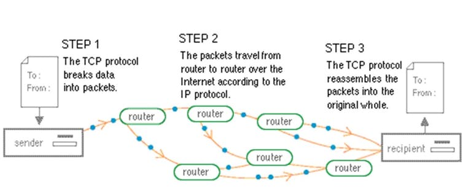

TCP
TCP also known as “Transmission Control Protocol", is one of the main protocols of
the Internet Protocol suite. It manages the “transmission” (sending and receiving) of all data as packets.
When digital information is requested on your device, the data is broken up into multiple packets. The router
guides all the packets to its destination. When the packets arrive, TCP checks the delivery and sends back a
confirmation that all the packets have been received. If some packets are missing, the missing or
incomplete packets will be resent from the source. Once TCP verifies that all the packets are there, the data
transfer is complete.

Router
A router is a computer on the internet that acts like a traffic manager to keep packets moving through the networks smoothly. All routers keep track of multiple paths to send packets, and the cheapest (fastest route to destination) available path for each packet depending on the IP address for the packet. The best path for a packet to reach the destination isn’t always direct. If a route is congested the router changes the path the data packets take to reach the same destination to avoid traffic.
Scalable
Scalability is the ability of a network, system or process to adapt to increasing or growing workloads without interrupting service for users. E.g. A router system can be called scalable if it can work with 4 devices or 1 million devices. Scalable and Fault Tolerance are words that are related to each other
Fault Tolerance
Fault tolerance is the capability of a system or network to work even if something goes wrong in the system or hardware. For a computer or network to be fault tolerant, steps to prevent how the computer or network device from failing must be taken, such as – Power Failure, Power Surge, Data loss, Unauthorized access, etc. The more fault tolerant something is, the more unlikely it is for any failure to occur.
Port
All data shared over the internet is sent and received using a set of rules also known as a protocol. Each of the protocol is given a specific port number. E.g. All websites transferred over HTTP use port number 80 and all websites that use HTTPS to transfer data has port number 443. Port numbers help prevent confusion between other protocols. They can also increase the security by adding or blocking specific protocol. A port can also refer to a hardware port, which is a physical connection on a computer or another device such as - USB, Thunderbolt, Ethernet, Lightning, USB-C etc.
Protocol
Since computers often interact with each other, a common set of rules and instructions are followed. Out
of these, a specific set of rules is called a protocol. There are many types of protocol such as - PPP, TCP/IP,
SLIP, HTTP, and FTP.
Expansion of these abbreviations:
- Point-to-Point protocol
- Transmission Control Protocol/Internet Protocol
- Serial line Internet Protocol
- Hypertext transfer Protocol
- File transfer protocol

Packet
A packet is a unit of data. Information gets transferred from one computer to another in the form of a packet of information. When data is transmitted to another computer or network, the digital information gets broken down
into smaller parts called packets that may have to change directions to the destination depending on internet traffic, in order to reach the same destination. Because of this they may arrive at the same
destination at different times or unordered. Once all the packets arrive at the destination,
they are re-ordered before the network device or computer receives it.
Payload
A payload is a part of sent data that is the intended message to the receiver. The header is not part of
the payload as it only identifies the source and destination of a packet of data. The actual data sent is known as
the payload. The header is removed from the packet when it reaches its destination. A payload can also refer to
any malicious executable code that gets delivered to its target once the target
is infected.
Header
A header is a part of a document or a data packet that contains important information that goes together with the
actual data or the payload.
Some examples are:
- Email – email header given at the top
- HTTP message – Metadata
- Data packet – header part of data packet
- Rich text documents – Head of author, total pages, date, etc.